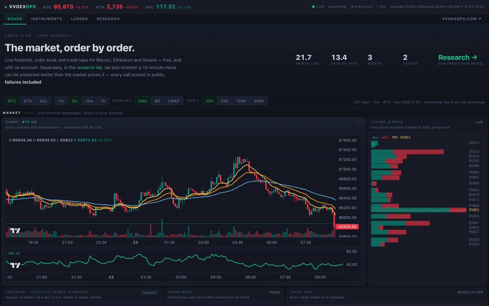
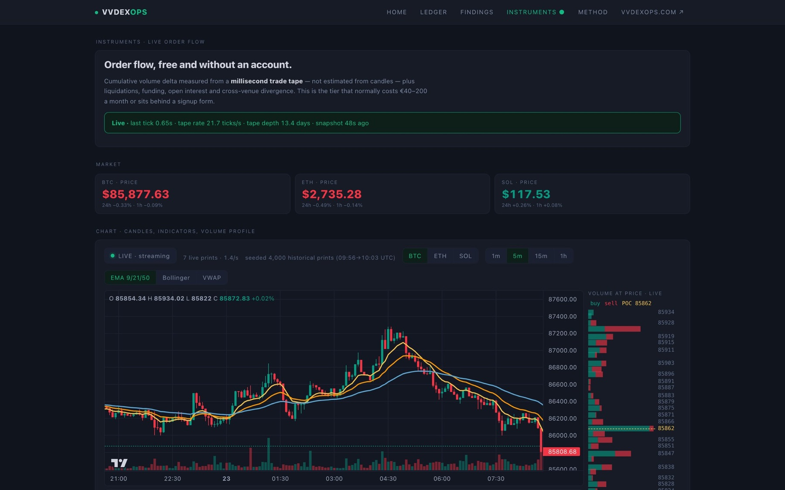
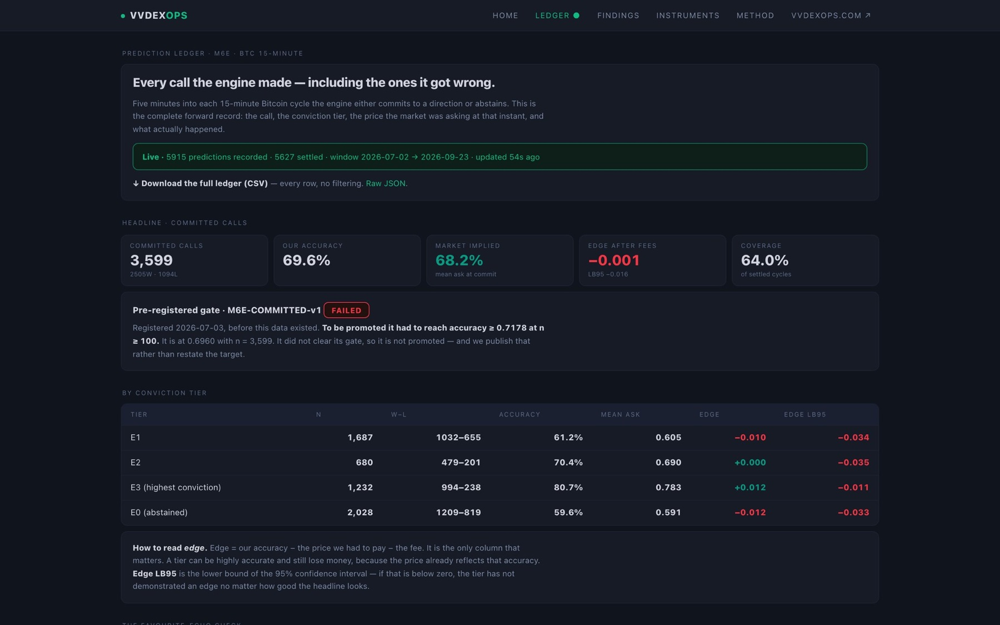

01
The problem
Market calls are easy to claim after the fact, and hard to check.
02
The plan
Publish every dated call into a chained record, so anyone can check the whole history rather than the highlights.
03
What I built
01 / 03
Every call hash-chained to the last

02 / 03
Paper only: no capital, no manual trades, automation or nothing

03 / 03
Every claim gated on the threshold it declared in advance

04
How I know it works
Every call hash-chained to the last
Claims gated on thresholds set in advance
Paper only: no capital
Automation or nothing: no manual trades
05
Links
06
What I withdrew
Withdrawnby me, on the record
The 70% claim
0.683measured
0.7178gate set in advance
A directional-accuracy claim was only allowed to stand if it cleared a threshold written down before the measurement. It measured 0.683 against a declared gate of 0.7178, so I withdrew it. The dated record that measured it stays public.